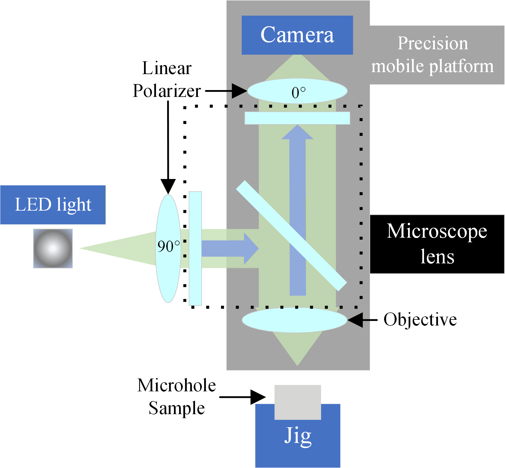

Sep 2024 — Jun 2027
Huazhong University of Science and Technology (HUST)
M.Eng. in Mechanical Engineering · Expected Jun 2027
Wuhan, China
Robotics · Precision Engineering · 3D Vision
I am a Master's student in Mechanical Engineering at Huazhong University of Science and Technology (HUST), advised by Prof. Wenlong Li at the State Key Laboratory of Digital Manufacturing Equipment and Technology .
My research focuses on reliable perception, measurement, planning, and control methods for robotic and precision-engineering systems, with current work spanning microscopic 3D reconstruction, robotic visual control, and motion planning under uncertainty.
Research Directions
Academic Background
M.Eng. in Mechanical Engineering · Expected Jun 2027
Wuhan, China
B.Eng. in Mechanical Design, Manufacturing and Automation
Wuhan, China
Selected Work
Developed a microscopic shape-from-focus metrology framework for reliable 3D reconstruction of reflective industrial micro-hole surfaces.

Developed a macro–micro visual control framework for autonomous micro-hole localization under limited field-of-view and focus constraints.
Investigating closed-loop robotic obstacle avoidance using partial RGB-D observations, learned obstacle representations, trajectory prediction, and model predictive control.
Developed stiffness-aware robotic machining analysis and time-optimal trajectory planning for CFRP horizontal stabilizer rib manufacturing.
Research Outputs
Manuscript under major revision at IEEE Transactions on Instrumentation and Measurement .
Manuscript in preparation; planned for submission to IEEE/ASME Transactions on Mechatronics .
2023 International Conference on Unmanned Aircraft Systems (ICUAS), Warsaw, Poland, pp. 235–240.
Selected Honors